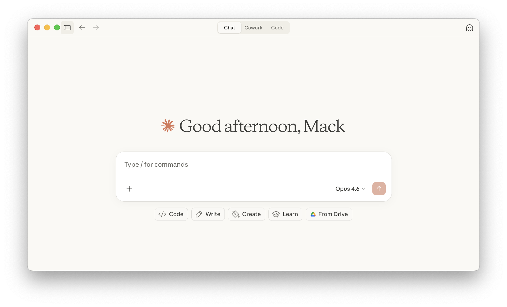
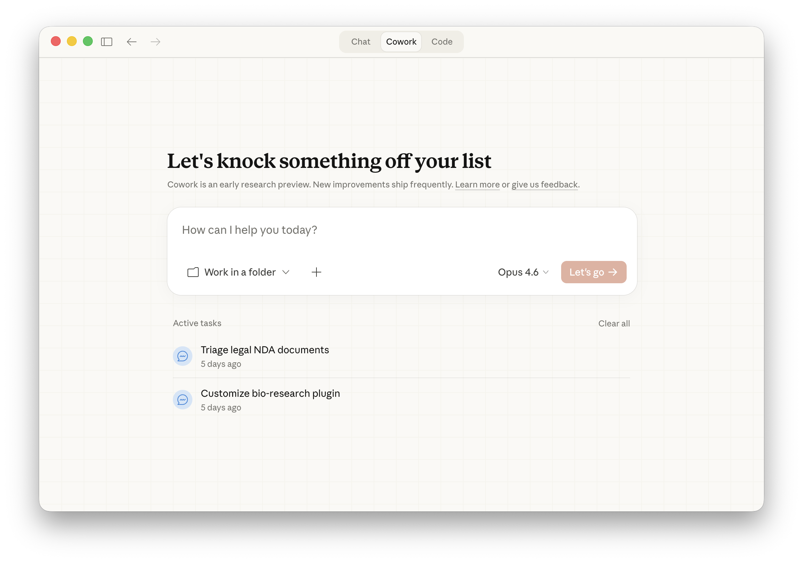
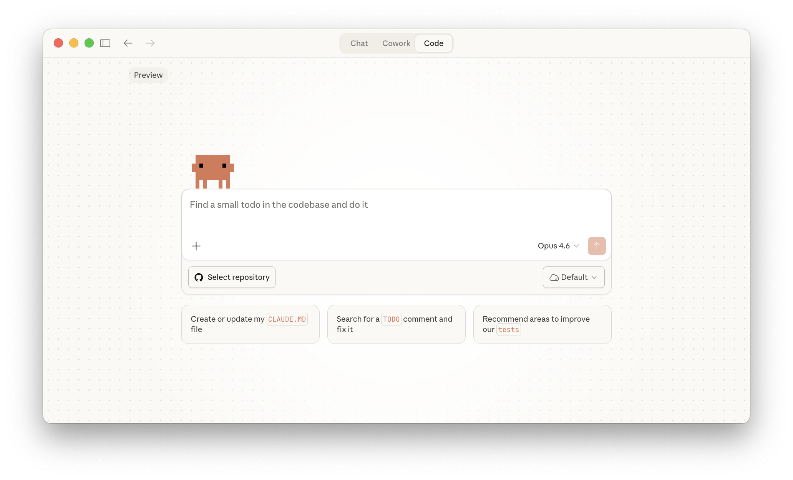

학습 내용
예상 소요 시간: 6분
이 레슨을 마치면 다음을 할 수 있습니다:
- Claude 데스크톱 앱의 세 가지 모드인 Chat, Cowork, Code를 파악하고 각 모드의 설계 목적을 이해한다
- 빠른 입력, 예약 작업, 로컬 vs. 원격 개발 등 각 모드의 고유한 주요 기능을 설명한다
- 수행해야 할 작업의 유형에 따라 적절한 모드를 선택한다
Claude 데스크톱 앱 탐색: Chat, Cowork, Code
Claude 데스크톱 앱은 Claude와 함께 작업하는 세 가지 방법을 제공합니다: Chat, Cowork, Code — 빠른 질문에서 복잡한 리서치, 소프트웨어 구축까지.
Chat은 claude.ai에서 알고 있는 것과 동일한 Claude에 빠른 입력, 스크린샷, 받아쓰기, 그리고 컴퓨터에서 기본적으로 실행되는 커넥터가 추가된 것입니다. Cowork는 Claude에게 더 많은 것을 할 수 있는 범위와 여유를 제공합니다. 이 더 넓은 범위를 통해 더 철저한 리서치와 분석을 수행하고, 더 복잡한 문서와 결과물을 만들어낼 수 있습니다. Code는 코드 작성 및 테스트부터 배포까지 소프트웨어 구축을 위한 것입니다.
Cowork와 Code는 동일한 엔진에서 실행됩니다. 둘 다 내부적으로 Claude Code 기반으로, 내 컴퓨터에 로컬로 실행되며, 독립적인 작업이 가능하고, 하위 에이전트를 생성하며 오래 걸리는 작업을 지속할 수 있습니다. 이를 통해 Claude는 리서치와 글쓰기 또는 소프트웨어 구축 같은 더 큰 작업을 스스로 처리할 수 있습니다.
각 모드는 담당하는 작업을 중심으로 설계되어, 중요한 것을 보여주고 필요한 곳에서 제어권을 제공합니다.
Chat

Chat는 질문하거나, 브레인스토밍하거나, 초안을 작성하거나, 문제를 주고받으며 해결해야 할 때 뛰어납니다.
claude.ai를 사용해 본 적이 있다면 동일하게 작동하며, 컴퓨터에서 기본적으로 실행됨으로써 제공되는 몇 가지 기능이 추가됩니다:
- 빠른 입력. Mac에서 Option 키를 두 번 탭하면 작업 중인 화면 위에 Claude가 나타납니다. 앱 간에 전환하는 동안에도 위에 고정된 작은 창에서 응답합니다. 질문하기 위해 하던 일을 떠날 필요가 없습니다.
- 스크린샷 및 창 공유. 스크린샷을 캡처하거나 창을 공유하면 Claude가 정확히 무엇을 보고 있는지 확인할 수 있습니다. 화면에 있는 내용을 설명하는 것보다 빠르고 더 정확합니다. (Mac)
- 받아쓰기. 타이핑 대신 말로 문제를 설명합니다. 크게 생각을 정리할 때, 키보드에서 떨어져 있을 때, 또는 말하는 것이 쓰는 것보다 빠른 경우에 유용합니다. (Mac)
- 데스크톱 커넥터. 커넥터를 통해 로컬 도구와 서비스를 연결하면 Claude가 내 컴퓨터의 다른 도구와 함께 작업할 수 있습니다.
이런 때 사용해 보세요:
- 낯선 대시보드를 보고 있을 때. Option 키를 두 번 탭하고, 커서를 창 위로 드래그하여 스크린샷을 찍은 뒤 “이 지표들이 무슨 뜻인가요?”라고 질문하세요. 대시보드를 계속 보면서 오버레이로 Claude의 답변을 확인할 수 있습니다.
- 회의 사이에 프레젠테이션 구성을 생각해보고 싶을 때. 빠른 입력을 열고, 음성으로 전환한 뒤 말로 설명하세요. Claude가 말한 내용을 바탕으로 개요를 작성해 줍니다.
- 몇 주 동안 Apple Notes에 제품 출시 아이디어를 메모해 왔을 때. 설정에서 Notes 커넥터를 추가하고 Claude에게 이렇게 요청하세요: “Osprey 출시에 관한 내 메모를 모두 정리하고, 미완성으로 남긴 부분을 파악해서, 연결된 다른 도구에서 빈 부분을 채울 내용을 찾아줘.” Claude가 내 컴퓨터의 메모를 읽고, 가진 내용을 종합하며, 마무리하지 못한 부분을 이어서 처리합니다.
Cowork

Claude Cowork는 진지한 노력이 필요한 작업을 위해 설계되었습니다: 여러 출처에서 정보를 수집하고, 이를 이해하며, 완성된 결과물을 만들어내는 것.
Claude는 멀티태스킹이 가능하여 프로젝트의 여러 부분을 동시에 처리할 수 있으므로, 더 많은 출처에서 자료를 가져오고 끝까지 완수하는 지구력을 갖추고 있습니다. 철저한 리서치 브리핑, 다중 출처 재무 분석, 전체 계약서 검토, 여러 출처에 걸친 자료로 완성된 슬라이드 덱 등을 처리합니다.
시작 전에 Claude는 필요한 것을 파악하기 위해 간단한 질문을 몇 가지 합니다: 범위, 형식, 제약 조건. 사이드바에서 검토할 수 있는 계획을 만들어 줍니다. 작업하는 동안 작업이 완성되어 가는 것을 볼 수 있습니다: 참조하는 출처, 형태를 갖춰가는 파일, 계획의 진행 상황. 각각 자체 대화에서 여러 작업을 동시에 실행하고 사이드바에서 전환할 수 있습니다.
- 폴더 접근. 컴퓨터의 폴더를 Claude에게 제공하면 그 안의 내용을 읽고, 관련 항목을 파악하며, 완성된 작업을 같은 위치에 저장합니다. 파일을 업로드하거나, 대화에 콘텐츠를 붙여넣거나, Claude에 필요한 것을 가져오는 도구를 연결할 수도 있습니다.
- 예약 작업. Claude는 일정에 따라 반복 작업을 처리할 수 있습니다: Slack과 캘린더에서 가져오는 일일 브리핑, 배포된 내용의 주간 요약, 주의가 필요한 항목을 정리하는 아침 받은 편지함 분류. 작업과 실행 시간을 정의하면 Claude가 앱이 열릴 때마다 자동으로 처리합니다. 작업이 예정된 시간에 컴퓨터나 앱이 꺼져 있었다면, 돌아왔을 때 따라잡습니다.
- 브라우저 사용. Chrome에서 Claude를 연결하면 Claude가 웹사이트를 탐색하고, 페이지와 상호작용하며, 찾은 내용을 작업 중인 태스크에 직접 가져올 수 있습니다. 이것이 Cowork가 경쟁사 가격을 열 개 사이트에서 확인하거나 API가 없는 페이지에서 데이터를 수집하는 방법입니다.
- 플러그인. 플러그인은 Claude에게 자체적으로 갖추지 못한 기능을 제공합니다: 실시간 재무 데이터 가져오기, 회사 내부 지식 베이스 검색, 또는 특정 컴플라이언스 프레임워크 내에서 작업하기. Cowork 인터페이스에서 작업에 맞게 검색하고 추가할 수 있습니다.
- 보호된 환경. Cowork는 컴퓨터의 격리된 공간에서 실행됩니다. Claude는 공유한 폴더 내의 파일을 읽고, 만들고, 편집할 수 있지만 그 외의 항목에는 접근할 수 없습니다.
이런 때 사용해 보세요:
- 모든 도구를 데이터베이스처럼 쿼리하고 싶을 때. “지난 분기에 가격 책정에 대해 어떤 결정을 했나요?”라고 물으면 Cowork가 회의 메모, 슬라이드 덱, 이메일, Slack 스레드에서 답을 찾아줍니다.
- 새로운 시장을 리서치하거나, 경쟁사를 조사하거나, 도구를 평가할 때. 여러 탭에 걸쳐 추출하기 어려운 정보를 포함할 수 있는 모든 리서치에 대해, Cowork가 사이트를 방문하고, 보고서를 읽고, 가격을 수집하며, 출처가 포함된 구조화된 브리핑을 제공합니다 — 브라우저 탭을 단 하나도 열 필요 없이.
- 세부 내용이 중요한 대용량 문서를 분석해야 할 때: 계약서, 재무 보고서, 회의 녹취록. Cowork가 모든 페이지를 읽고, 전체 세트에 걸쳐 교차 참조하며, 모두 읽어야만 나타나는 패턴을 추출합니다. 50개를 5개 검토하듯 검토하세요.
- 매일 아침 같은 작업을 반복할 때 — 메시지 확인, 상태 업데이트 정리, 그날의 회의 준비. 예약 작업으로 한 번 설정해두면 Claude가 반복적으로 처리하므로, 잡무 대신 답변으로 하루를 시작할 수 있습니다.
Cowork는 현재 리서치 프리뷰 단계로, Pro, Max, Team, Enterprise 사용자에게 제공되며 새로운 기능이 정기적으로 추가되고 있습니다.
Code

Code는 Claude Code로 구동되는 완전한 개발 환경을 데스크톱 앱 안에 제공합니다.
Claude는 코드베이스에서 직접 작업합니다: 내용을 읽고, 코드를 작성하고 수정하며, 명령을 실행합니다. 시각적 diff로 변경 사항을 확인하고, 내장 터미널로 실행 중인 명령을 볼 수 있으며, git이 모든 버전을 추적하여 언제든 롤백할 수 있습니다.
Cowork가 공유한 폴더로 제한된 격리된 작업 공간에서 실행되는 반면, Code는 파일 시스템, 터미널, 개발 도구에 완전히 접근하여 프로젝트에서 직접 실행됩니다.
작업이 이루어지는 위치를 선택할 수 있습니다:
- 로컬: 컴퓨터의 폴더를 선택하면 Claude가 해당 파일로 직접 작업합니다. 내 컴퓨터에서 실행되므로 Claude가 프로젝트를 읽고, 로컬 도구에 접근하며, 브라우저에서 미리 볼 수 있는 개발 서버를 실행할 수 있습니다.
- 원격: GitHub 저장소를 연결하면 Claude가 클라우드 환경에서 작업합니다. 앱을 닫아도 세션이 계속되므로 대규모 리팩토링을 시작하고 나중에 확인할 수 있습니다. 대규모 코드베이스나 개발을 로컬 컴퓨터에서 분리하고 싶을 때 적합합니다.
세 가지 상호작용 모드로 Claude가 얼마나 자율적으로 작업할지 제어할 수 있습니다:
- Ask: Claude가 모든 변경 사항을 제안하고 승인을 기다립니다. 시각적 diff를 검토하고 수정 전에 수락하거나 거부합니다.
- Code: Claude가 파일 변경 사항을 자동으로 적용하지만 터미널 명령 실행 전에는 확인합니다.
- Plan: Claude가 아무것도 건드리기 전에 전체 접근 방식을 개요로 제시합니다. 전용 플랜 뷰어로 작업이 진행되는 동안 전략을 검토하고 재확인할 수 있습니다.
사이드바에서 상태(활성 또는 보관됨)와 환경(로컬 또는 클라우드)으로 필터링하여 프로젝트 전반에 걸쳐 여러 세션을 실행할 수 있습니다.
Code 탭은 Pro, Max, Team, Enterprise 사용자에게 순차적으로 제공됩니다.
세 가지 모드 비교
| Chat | Cowork | Code | |
|---|---|---|---|
| 최적화 대상 | 빠른 교류: 아이디어 탐색, 반복적인 초안 작성, 빠른 답변, 대화를 통한 학습 | 복잡하거나 지속적인 작업: 리서치, 분석, 파일 정리, 완성된 문서 및 결과물 생성 | 소프트웨어 구축: 코드 작성, 테스트, 실행 및 배포 |
| 주요 기능 | 빠른 입력, 받아쓰기 | 로컬 폴더에서 작업, 플러그인, 하위 에이전트, 예약 작업 | Ask/Code/Plan 모드, 시각적 diff, git 통합, 로컬 및 원격 환경 |
| 도구 및 확장 | 커넥터, Skills, Claude in Chrome | 커넥터 (로컬 및 원격), Skills, Claude in Chrome, 플러그인 | 커넥터, Skills, Claude in Chrome, 플러그인, Hooks |
레슨 되돌아보기
- Claude를 가장 자주 사용하는 작업들을 생각해 보세요. Chat, Cowork, Code 중 어떤 모드가 각 작업에 가장 적합할까요?
- 여러 출처에서 정보를 수집해야 했던 최근 프로젝트를 생각해 보세요. Cowork가 워크플로우를 어떻게 바꿀 수 있었을까요?
다음 내용
다음 레슨에서는 이 모드 중 하나를 더 깊이 파고들며 일상적인 워크플로우에서 최대한 활용하는 방법을 알아봅니다.
피드백
강의를 진행하면서 Claude 데스크톱 앱을 업무에 어떻게 활용하고 계신지, 그리고 의견이 있으시면 알려주시면 감사하겠습니다. 피드백을 여기에서 공유해 주세요.